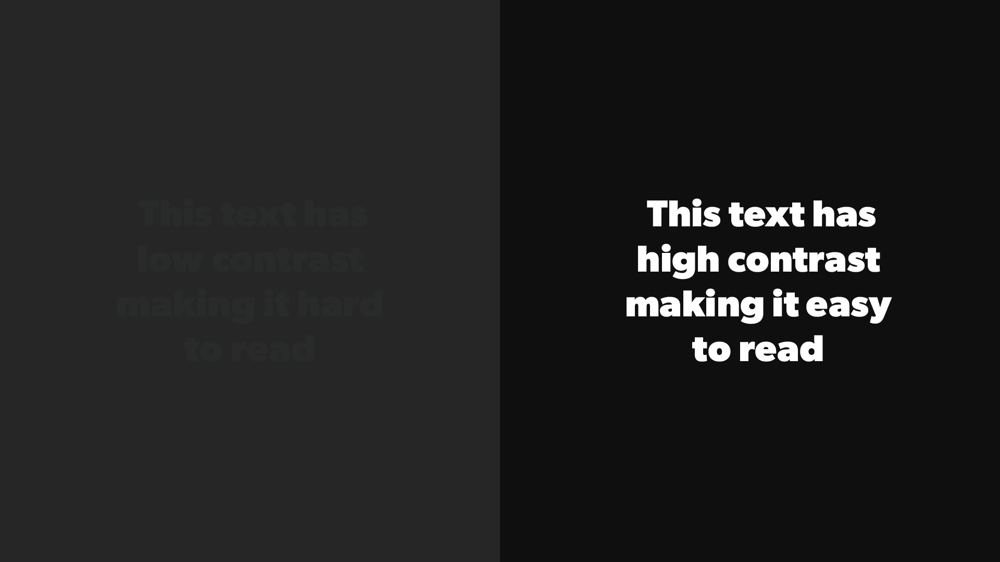
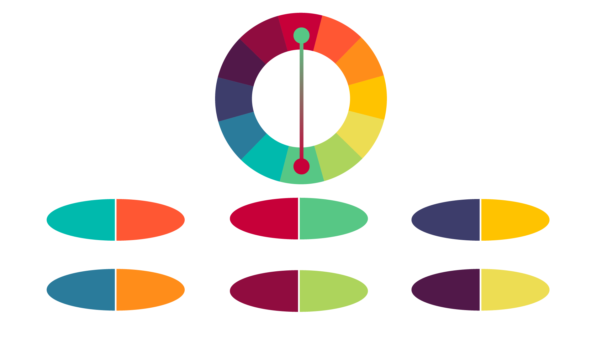

Contrast, in its most basic form is lights and darks. The more value between any two colors the more they separate from each other. Black and white have the most contrast you can have being at each end of the value spectrum. But knowing about value can be a powerful tool when designing websites. One great example from the reading is legibility, which “is optimized with an appropriate level of color contrast between the text and the background. What this means is if your text and background are too similar in value it becomes hard to read or infer a graphic. There is no set amount of contrast that is needed for legibility, but if the text clearly sticks out it will increase legibility.


Complementary colors are as the reading defines, “color schemes [that] consist of colors on opposite ends of the color wheel”. Some examples of complementary colors are red and green, yellow and purple, and orange and blue. These are all the complementary colors found of the basic color wheel. Complementary colors always go well together; this makes choosing any pairs to be a great choice for color schemes. Another benefit of complementary colors is that they provide a lot of contrast, yellow sticks out nicely on purple. When using complementary colors there are a couple things to avoid. Certain complementary colors are associated with things already, notably red and green for Christmas. This means that when using complementary colors play with the shades and hues to get a unique color scheme.